# Packete laden
library("pacman")
p_load("tidyverse", "sjPlot", "car", "lme4", "glmmTMB", "performance", "DHARMa")Statistik 6: Demo
Demoscript herunterladen (.qmd)
- Datensatz rm_plants.csv
- Datensatz DeerEcervi.csv
Repeated measurement
Es handelt sich um einen Düngeversuch (Daten aus Lepš & Šmilauer 2020). 18 Pflanzenindividuen wurden zufällig einer von drei Düngevarianten zugewiesen und dabei zu vier Zeitpunkten ihre Wuchshöhe gemessen. Abhängigkeiten sind hier in zwei Aspekten vorhanden: einerseits wurde jedes Pflanzenindividuum mehrfach gemessen, andererseits hat es nur jeweils eine Düngervariante erhalten
# Daten laden
plantf <- read_delim("datasets/stat/rm_plants.csv", delim = ";") |>
mutate(across(where(is.character), as.factor))
str(plantf)tibble [72 × 4] (S3: tbl_df/tbl/data.frame)
$ PlantHeight: num [1:72] 5 7 9 11 6 9 12 15 7 8 ...
$ Treatment : Factor w/ 3 levels "Nitrogen","Phosphorus",..: 3 3 3 3 1 1 1 1 2 2 ...
$ Time : Factor w/ 4 levels "T0","T1","T2",..: 1 2 3 4 1 2 3 4 1 2 ...
$ PlantID : Factor w/ 18 levels "P01","P02","P03",..: 1 1 1 1 2 2 2 2 3 3 ...summary(plantf) PlantHeight Treatment Time PlantID
Min. : 4.000 Nitrogen :24 T0:18 P01 : 4
1st Qu.: 6.000 Phosphorus:24 T1:18 P02 : 4
Median : 9.000 Water :24 T2:18 P03 : 4
Mean : 9.306 T3:18 P04 : 4
3rd Qu.:11.000 P05 : 4
Max. :18.000 P06 : 4
(Other):48 table(plantf$Treatment, plantf$PlantID)
P01 P02 P03 P04 P05 P06 P07 P08 P09 P10 P11 P12 P13 P14 P15 P16
Nitrogen 0 4 0 0 4 0 0 4 0 0 4 0 0 4 0 0
Phosphorus 0 0 4 0 0 4 0 0 4 0 0 4 0 0 4 0
Water 4 0 0 4 0 0 4 0 0 4 0 0 4 0 0 4
P17 P18
Nitrogen 4 0
Phosphorus 0 4
Water 0 0# Mit aov
pf_eaov <- aov(PlantHeight ~ Treatment * Time + Error(PlantID), data = plantf)
summary(pf_eaov)
Error: PlantID
Df Sum Sq Mean Sq F value Pr(>F)
Treatment 2 115.36 57.68 21.68 3.76e-05 ***
Residuals 15 39.92 2.66
---
Signif. codes: 0 '***' 0.001 '**' 0.01 '*' 0.05 '.' 0.1 ' ' 1
Error: Within
Df Sum Sq Mean Sq F value Pr(>F)
Time 3 588.1 196.02 382.13 < 2e-16 ***
Treatment:Time 6 64.9 10.81 21.07 1.37e-11 ***
Residuals 45 23.1 0.51
---
Signif. codes: 0 '***' 0.001 '**' 0.01 '*' 0.05 '.' 0.1 ' ' 1# Als lmm
pf_lmm <- glmmTMB(PlantHeight ~ Treatment * Time + (1 | PlantID),
family = gaussian,
REML = TRUE,
data = plantf)
Anova(pf_lmm)Analysis of Deviance Table (Type II Wald chisquare tests)
Response: PlantHeight
Chisq Df Pr(>Chisq)
Treatment 43.351 2 3.859e-10 ***
Time 1146.390 3 < 2.2e-16 ***
Treatment:Time 126.444 6 < 2.2e-16 ***
---
Signif. codes: 0 '***' 0.001 '**' 0.01 '*' 0.05 '.' 0.1 ' ' 1summary(pf_lmm) Family: gaussian ( identity )
Formula: PlantHeight ~ Treatment * Time + (1 | PlantID)
Data: plantf
AIC BIC logLik deviance df.resid
204.4 236.3 -88.2 176.4 70
Random effects:
Conditional model:
Groups Name Variance Std.Dev.
PlantID (Intercept) 0.537 0.7328
Residual 0.513 0.7162
Number of obs: 72, groups: PlantID, 18
Dispersion estimate for gaussian family (sigma^2): 0.513
Conditional model:
Estimate Std. Error z value Pr(>|z|)
(Intercept) 5.1667 0.4183 12.351 < 2e-16 ***
TreatmentPhosphorus 0.6667 0.5916 1.127 0.259796
TreatmentWater 0.1667 0.5916 0.282 0.778160
TimeT1 4.3333 0.4135 10.479 < 2e-16 ***
TimeT2 7.6667 0.4135 18.541 < 2e-16 ***
TimeT3 11.3333 0.4135 27.408 < 2e-16 ***
TreatmentPhosphorus:TimeT1 -2.1667 0.5848 -3.705 0.000211 ***
TreatmentWater:TimeT1 -2.8333 0.5848 -4.845 1.27e-06 ***
TreatmentPhosphorus:TimeT2 -3.6667 0.5848 -6.270 3.61e-10 ***
TreatmentWater:TimeT2 -4.1667 0.5848 -7.125 1.04e-12 ***
TreatmentPhosphorus:TimeT3 -5.0000 0.5848 -8.550 < 2e-16 ***
TreatmentWater:TimeT3 -5.8333 0.5848 -9.975 < 2e-16 ***
---
Signif. codes: 0 '***' 0.001 '**' 0.01 '*' 0.05 '.' 0.1 ' ' 1r2(pf_lmm)# R2 for Mixed Models
Conditional R2: 0.957
Marginal R2: 0.912# Modellvalidierung mit DHARMa
set.seed(123)
simulationOutput <- simulateResiduals(fittedModel = pf_lmm, plot = TRUE, n = 1000)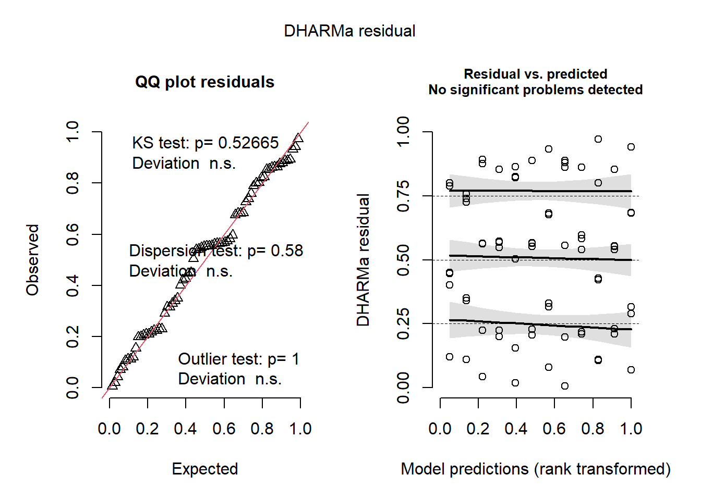
# Plot residuals vs. covariates des models
plotResiduals(simulationOutput, form = plantf$Time)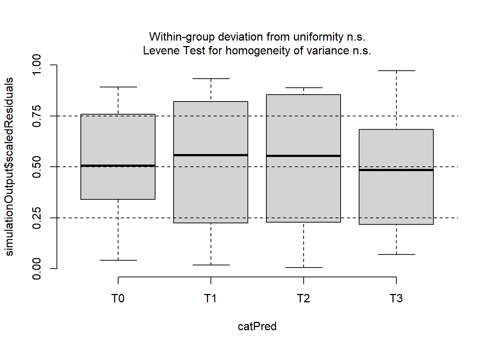
plotResiduals(simulationOutput, form = plantf$Treatment) 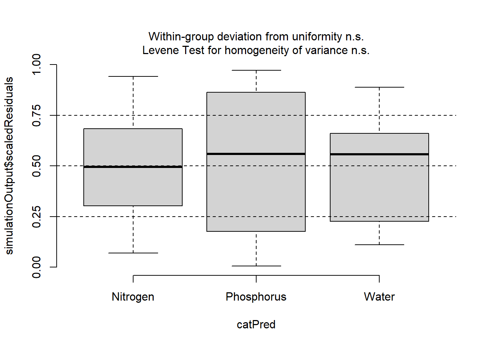
# Darstellung (Interaktions Plot)
plot_model(pf_lmm,
type = "pred", pred.type = "re",
terms = c("Time", "Treatment") ) +
theme_classic()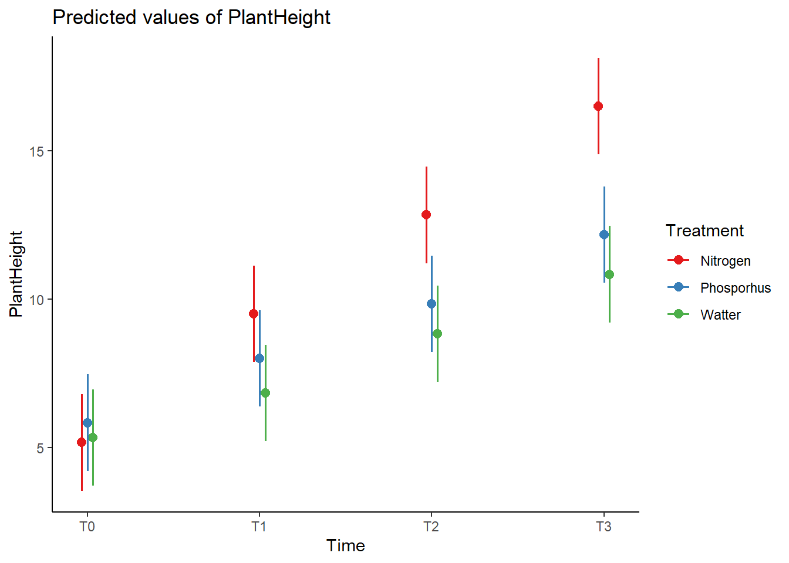
Split-plot Design
Es wurden zufällig fünf Untersuchungsgebiete (sites) ausgewählt, in denen jeweils der gleiche Versuchsblock implementiert wurde, bestehend aus dem Management (treatment) und der Frage, ob wilde Grossherbivoren Zugang zur Fläche hatten (plot type) (Abb. 6.1). Je ein Drittel jeder Untersuchungsfläche (zufällig zugewiesen) blieb gänzlich ungenutzt(U), wurde zu Beginn kontrolliert abgebrannt und danach sich selbst überlassen (B) oder wurde jährlich gemäht (M). Innerhalb jedes Drittels wiederum wurde (zufällig zugewiesen) die Hälfte eingezäunt (F = fenced vs. O = open), um die Beweidung durch Grossherbivoren zu verhindern.
# Import Data
glex <- read_delim("datasets/stat/Riesch_et_al_2020_grassland.csv", delim = ";") |>
mutate(across(where(is.character), as.factor))
str(glex)tibble [60 × 9] (S3: tbl_df/tbl/data.frame)
$ ID_plot : Factor w/ 60 levels "Eul_A1_MP_14",..: 1 2 3 4 5 6 7 8 9 10 ...
$ year : num [1:60] 2014 2018 2014 2018 2014 ...
$ site_code : Factor w/ 5 levels "Eul","Kug","Nun",..: 1 1 1 1 1 1 1 1 1 1 ...
$ site_no : num [1:60] 4 4 4 4 4 4 4 4 4 4 ...
$ treatment : Factor w/ 3 levels "B","M","U": 2 2 2 2 3 3 3 3 1 1 ...
$ plot_type : Factor w/ 2 levels "F","O": 2 2 1 1 2 2 1 1 1 1 ...
$ SR : num [1:60] 44 48 44 47 43 29 44 24 45 37 ...
$ inverseSimpson: num [1:60] 11.41 9.9 10.25 6.51 12.35 ...
$ BergerParker : num [1:60] 0.193 0.21 0.187 0.35 0.155 ...glex$year <- as.factor(glex$year)
summary(glex) ID_plot year site_code site_no treatment plot_type
Eul_A1_MP_14: 1 2014:30 Eul :12 Min. :1 B:20 F:30
Eul_A1_MP_18: 1 2018:30 Kug :12 1st Qu.:2 M:20 O:30
Eul_A2_MK_14: 1 Nun :12 Median :3 U:20
Eul_A2_MK_18: 1 SomO:12 Mean :3
Eul_B1_WP_14: 1 SomW:12 3rd Qu.:4
Eul_B1_WP_18: 1 Max. :5
(Other) :54
SR inverseSimpson BergerParker
Min. :24.00 Min. : 2.538 Min. :0.1200
1st Qu.:39.75 1st Qu.: 7.169 1st Qu.:0.1732
Median :44.00 Median : 9.945 Median :0.2133
Mean :43.52 Mean : 9.347 Mean :0.2551
3rd Qu.:48.00 3rd Qu.:11.555 3rd Qu.:0.2891
Max. :61.00 Max. :16.102 Max. :0.6100
table(glex$site_code, glex$treatment, glex$plot_type, glex$year), , = F, = 2014
B M U
Eul 1 1 1
Kug 1 1 1
Nun 1 1 1
SomO 1 1 1
SomW 1 1 1
, , = O, = 2014
B M U
Eul 1 1 1
Kug 1 1 1
Nun 1 1 1
SomO 1 1 1
SomW 1 1 1
, , = F, = 2018
B M U
Eul 1 1 1
Kug 1 1 1
Nun 1 1 1
SomO 1 1 1
SomW 1 1 1
, , = O, = 2018
B M U
Eul 1 1 1
Kug 1 1 1
Nun 1 1 1
SomO 1 1 1
SomW 1 1 1# balanced DesignLMM with random interecept
# REML = TRUE : (Restricted maximum likelihood) v.s
# REML = FALSE: Maximum likelihood (ML)
# Bei REML sind die estimates genauer, aber REML sollte nicht für likelihood
# ratio test (drop1) benutzt werden
# Dies ist nur relevant für Gaussian mixed models (LMM) nicht für GLMMs
# 2.1 Model fitten
lmm_1 <- glmmTMB(SR ~ year * treatment * plot_type +
(1| site_code/treatment/plot_type),
family = gaussian,
REML = FALSE,
data = glex)
Anova(lmm_1)Analysis of Deviance Table (Type II Wald chisquare tests)
Response: SR
Chisq Df Pr(>Chisq)
year 58.6751 1 1.860e-14 ***
treatment 5.3910 2 0.067509 .
plot_type 3.1397 1 0.076406 .
year:treatment 27.5733 2 1.029e-06 ***
year:plot_type 8.0419 1 0.004571 **
treatment:plot_type 3.6181 2 0.163812
year:treatment:plot_type 0.9435 2 0.623917
---
Signif. codes: 0 '***' 0.001 '**' 0.01 '*' 0.05 '.' 0.1 ' ' 1# Model optimierung
drop1(lmm_1, test = "Chi")Single term deletions
Model:
SR ~ year * treatment * plot_type + (1 | site_code/treatment/plot_type)
Df AIC LRT Pr(>Chi)
<none> 385.27
year:treatment:plot_type 2 382.20 0.92894 0.6285lmm_2 <- update(lmm_1,~. -year:treatment:plot_type)
drop1(lmm_2, test = "Chi")Single term deletions
Model:
SR ~ year + treatment + plot_type + (1 | site_code/treatment/plot_type) +
year:treatment + year:plot_type + treatment:plot_type
Df AIC LRT Pr(>Chi)
<none> 382.20
year:treatment 2 398.84 20.6412 3.295e-05 ***
year:plot_type 1 387.26 7.0678 0.007848 **
treatment:plot_type 2 381.44 3.2413 0.197775
---
Signif. codes: 0 '***' 0.001 '**' 0.01 '*' 0.05 '.' 0.1 ' ' 1lmm_3 <- update(lmm_2,~. -treatment:plot_type)
drop1(lmm_3, test = "Chi")Single term deletions
Model:
SR ~ year + treatment + plot_type + (1 | site_code/treatment/plot_type) +
year:treatment + year:plot_type
Df AIC LRT Pr(>Chi)
<none> 381.44
year:treatment 2 397.16 19.7253 5.208e-05 ***
year:plot_type 1 386.37 6.9307 0.008473 **
---
Signif. codes: 0 '***' 0.001 '**' 0.01 '*' 0.05 '.' 0.1 ' ' 1# Refit with REML
lmm_4 <- update(lmm_3, REML = TRUE)
# Resultat
Anova(lmm_4)Analysis of Deviance Table (Type II Wald chisquare tests)
Response: SR
Chisq Df Pr(>Chisq)
year 49.3013 1 2.195e-12 ***
treatment 4.3128 2 0.115741
plot_type 2.3609 1 0.124407
year:treatment 23.1682 2 9.313e-06 ***
year:plot_type 6.7571 1 0.009338 **
---
Signif. codes: 0 '***' 0.001 '**' 0.01 '*' 0.05 '.' 0.1 ' ' 1summary(lmm_4) Family: gaussian ( identity )
Formula:
SR ~ year + treatment + plot_type + (1 | site_code/treatment/plot_type) +
year:treatment + year:plot_type
Data: glex
AIC BIC logLik deviance df.resid
358.2 383.3 -167.1 334.2 56
Random effects:
Conditional model:
Groups Name Variance Std.Dev.
plot_type:treatment:site_code (Intercept) 2.1332 1.4606
treatment:site_code (Intercept) 8.0931 2.8448
site_code (Intercept) 0.8542 0.9242
Residual 18.6692 4.3208
Number of obs: 60, groups:
plot_type:treatment:site_code, 30; treatment:site_code, 15; site_code, 5
Dispersion estimate for gaussian family (sigma^2): 18.7
Conditional model:
Estimate Std. Error z value Pr(>|z|)
(Intercept) 45.900 2.136 21.487 < 2e-16 ***
year2018 -8.200 2.231 -3.675 0.000238 ***
treatmentM 2.300 2.720 0.846 0.397761
treatmentU 3.800 2.720 1.397 0.162377
plot_typeO -1.000 1.665 -0.600 0.548210
year2018:treatmentM 2.400 2.733 0.878 0.379808
year2018:treatmentU -10.000 2.733 -3.659 0.000253 ***
year2018:plot_typeO 5.800 2.231 2.599 0.009338 **
---
Signif. codes: 0 '***' 0.001 '**' 0.01 '*' 0.05 '.' 0.1 ' ' 1r2(lmm_4)# R2 for Mixed Models
Conditional R2: 0.688
Marginal R2: 0.502# Modellvalidierung
set.seed(123)
simulationOutput <- simulateResiduals(fittedModel = lmm_4, plot = TRUE, n = 1000)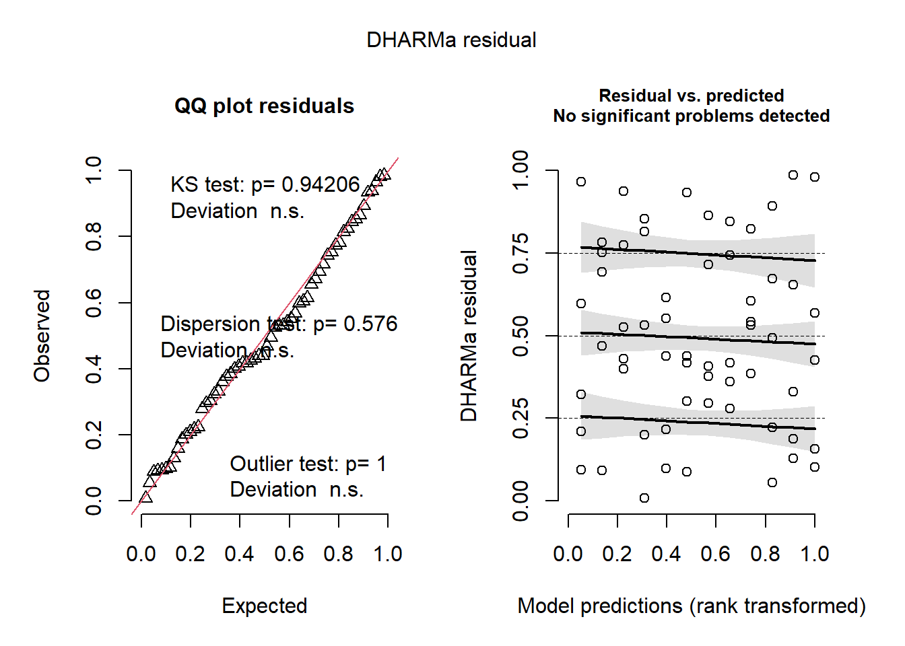
# Plot residuals vs. covariates des models
plotResiduals(simulationOutput, form = glex$year)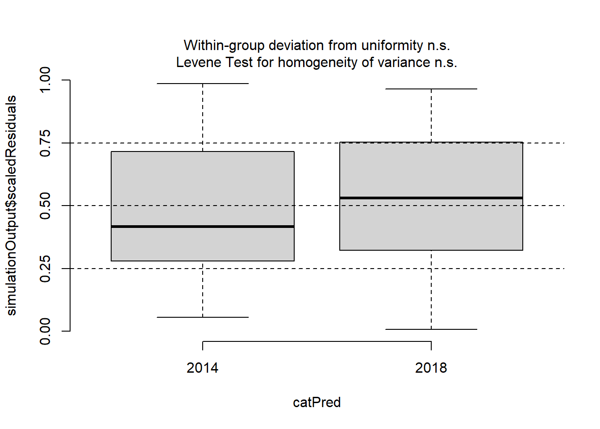
plotResiduals(simulationOutput, form = glex$treatment)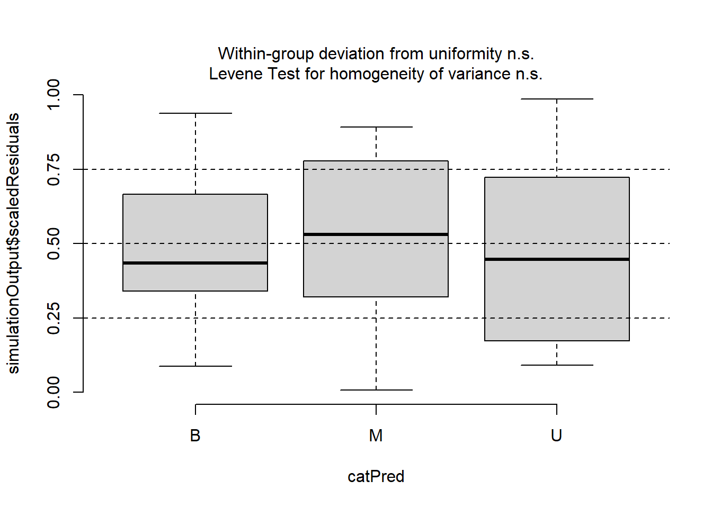
plotResiduals(simulationOutput, form = glex$plot_type)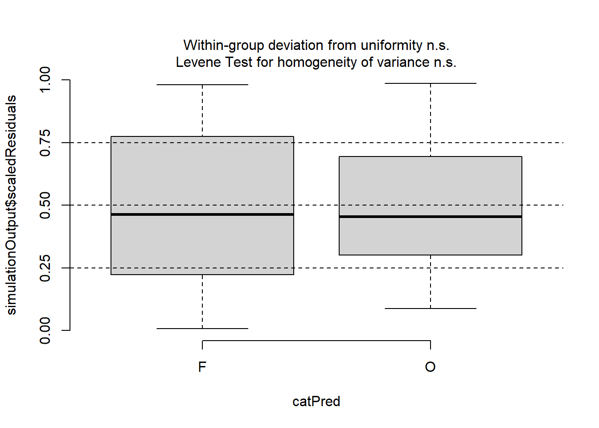
# Darstellung
plot_model(lmm_4,
type = "pred", pred.type = "re",
terms = c("year", "treatment", "plot_type") ) +
theme_classic()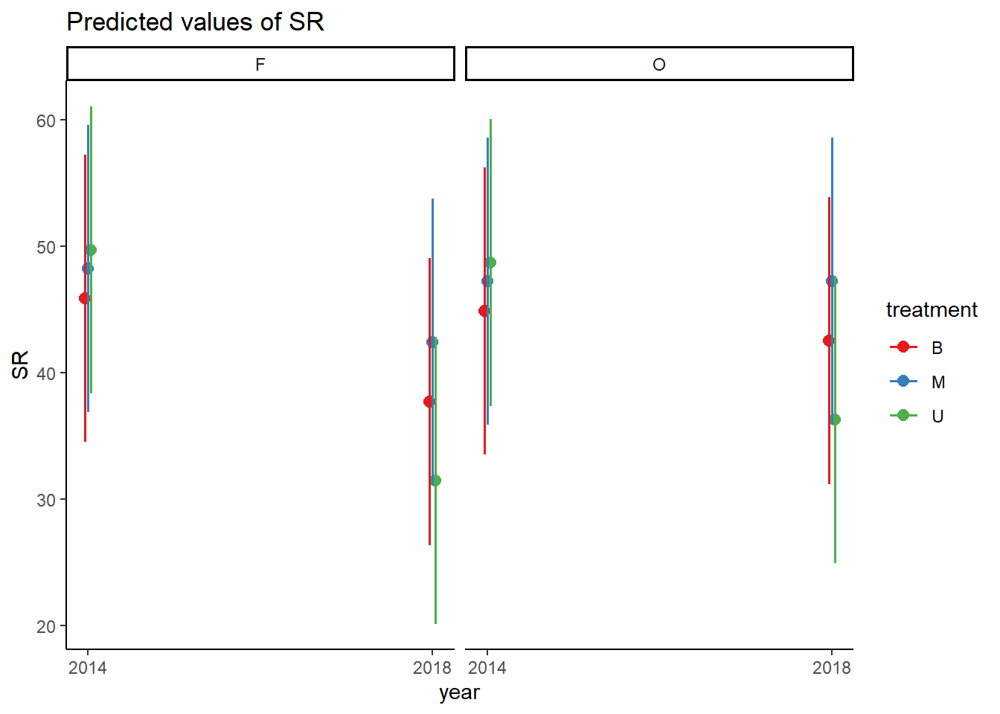
Random slope & random intercept
Im folgenden Beispiel wurde bei 18 Versuchspersonen die Wirkung von zunehmenden Schlafentzug auf die Reaktionszeit (in ms) gemessen. Bei jeder Versuchsperson wurde der Effekt an den Tagen 2–9 des Versuchs je einmal gemessen (Tage 0 und 1 sind die Trainingsphase und bleiben daher unberücksichtigt).
# Daten laden
data(sleepstudy)
?sleepstudy
# Daten ohne Trainingsphase
sleepstudy_2 <- subset(sleepstudy, Days>=2)
str(sleepstudy_2)'data.frame': 144 obs. of 3 variables:
$ Reaction: num 251 321 357 415 382 ...
$ Days : num 2 3 4 5 6 7 8 9 2 3 ...
$ Subject : Factor w/ 18 levels "308","309","310",..: 1 1 1 1 1 1 1 1 2 2 ...summary(sleepstudy_2) Reaction Days Subject
Min. :203.0 Min. :2.00 308 : 8
1st Qu.:265.2 1st Qu.:3.75 309 : 8
Median :303.2 Median :5.50 310 : 8
Mean :308.0 Mean :5.50 330 : 8
3rd Qu.:347.7 3rd Qu.:7.25 331 : 8
Max. :466.4 Max. :9.00 332 : 8
(Other):96 table(sleepstudy_2$Subject)
308 309 310 330 331 332 333 334 335 337 349 350 351 352 369 370 371 372
8 8 8 8 8 8 8 8 8 8 8 8 8 8 8 8 8 8 # Visualisierung
ggplot(sleepstudy_2, aes(y = Reaction, x = Days)) +
geom_point() +
xlab("Average reaction time (ms)") +
ylab("Number of days of sleep deprivation") +
geom_smooth(method = "lm", formula = 'y ~ x', se = F, fullrange = T) +
theme_classic() +
facet_wrap(~Subject)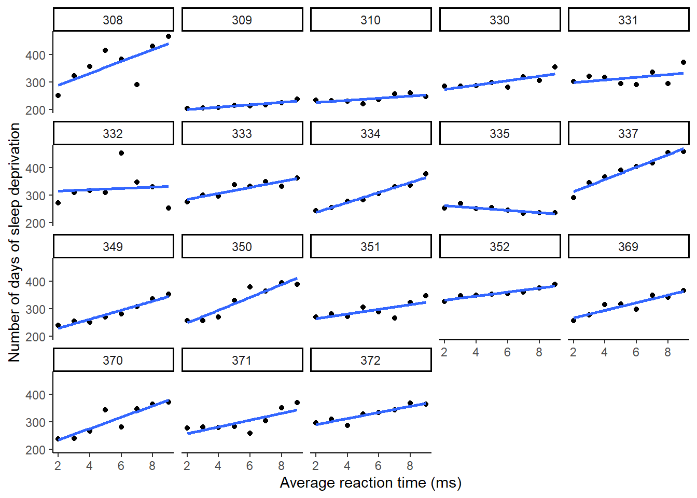
Wie man in der Visualisierung sehen kann, unterscheiden sich nicht nur die Intercepts (Reaktionszeit ohne Schlafmangel), sondern der Schlafmangel scheint sich auch unterschiedlich stark auf die Reaktionszeit der Probanden auszuwirken. In diesem Fall ist es daher sinnvoll, nicht nur einen Random Intercept, sondern auch einen Random Slope zu fitten.
# Fit model
lmm_1 <- glmmTMB(Reaction ~ Days + (Days | Subject),
family = gaussian,
REML = TRUE,
data = sleepstudy_2)
summary(lmm_1) Family: gaussian ( identity )
Formula: Reaction ~ Days + (Days | Subject)
Data: sleepstudy_2
AIC BIC logLik deviance df.resid
1416.1 1433.9 -702.0 1404.1 140
Random effects:
Conditional model:
Groups Name Variance Std.Dev. Corr
Subject (Intercept) 992.63 31.506
Days 45.78 6.766 -0.25
Residual 651.60 25.526
Number of obs: 144, groups: Subject, 18
Dispersion estimate for gaussian family (sigma^2): 652
Conditional model:
Estimate Std. Error z value Pr(>|z|)
(Intercept) 245.097 9.260 26.469 < 2e-16 ***
Days 11.435 1.845 6.197 5.75e-10 ***
---
Signif. codes: 0 '***' 0.001 '**' 0.01 '*' 0.05 '.' 0.1 ' ' 1r2(lmm_1)# R2 for Mixed Models
Conditional R2: 0.806
Marginal R2: 0.206# Modellvalidierung
set.seed(123)
simulationOutput <- simulateResiduals(fittedModel = lmm_1, plot = TRUE, n = 1000)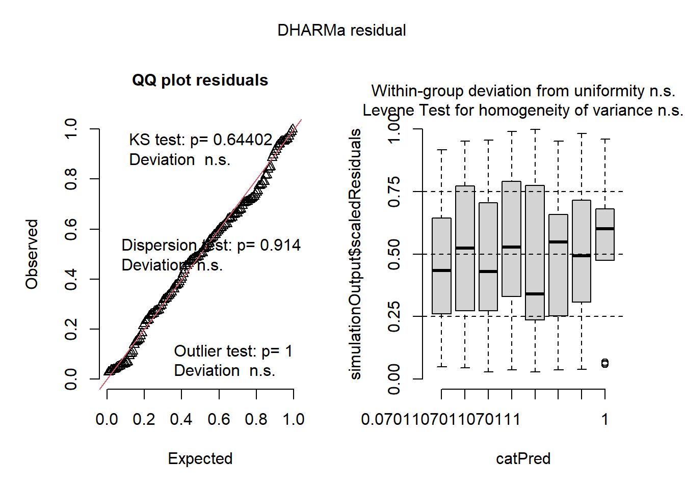
plotResiduals(simulationOutput, form = sleepstudy_2$Days)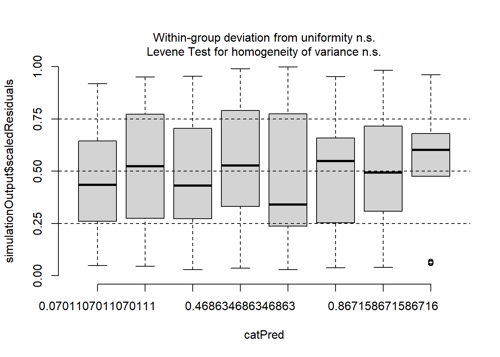
# Visualisierung
plot_model(lmm_1,
type = "pred", pred.type = "re",
show.data = TRUE) +
theme_classic()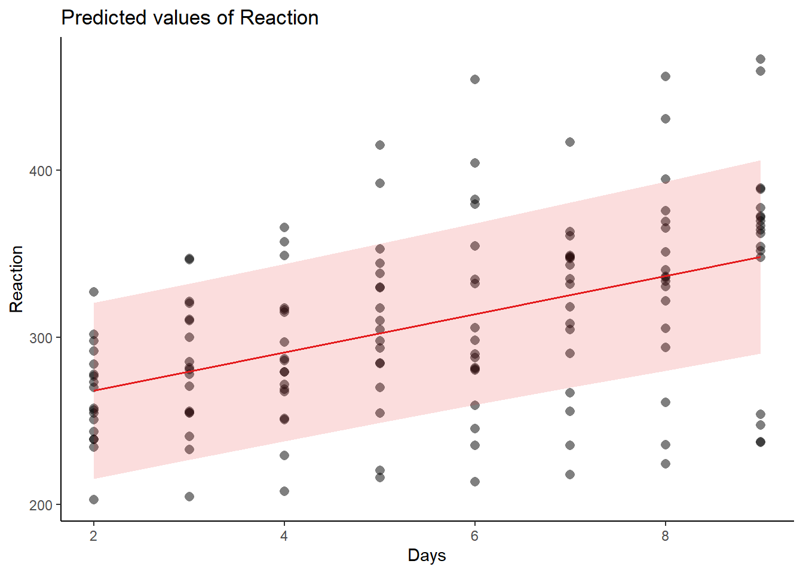
GLMM
Befall von Rothirschen (Cervus elaphus) in spanischen Farmen mit dem Parasiten Elaphostrongylus cervi. Modelliert wird Vorkommen/Nichtvorkommen von L1-Larven 130 dieser Nematode in Abhängigkeit von Körperlänge und Geschlecht der Hirsche. Erhoben wurden die Daten auf 24 Farmen.
# Daten laden und für GLMM aufbereiten
DeerEcervi <- read_delim("datasets/stat/DeerEcervi.csv", delim = ";") |>
mutate(across(where(is.character), as.factor))
# Daten anschauen
str(DeerEcervi)tibble [826 × 4] (S3: tbl_df/tbl/data.frame)
$ Farm : Factor w/ 24 levels "AL","AU","BA",..: 1 1 1 1 1 1 1 1 1 1 ...
$ Sex : Factor w/ 2 levels "female","male": 2 1 1 1 1 1 1 1 1 1 ...
$ Length: num [1:826] 164 216 208 206 204 200 199 197 196 196 ...
$ Ecervi: num [1:826] 0 0 0 1 0 0 1 1 1 0 ...summary(DeerEcervi) Farm Sex Length Ecervi
MO :209 female:448 Min. : 75.0 Min. :0.0000
CB : 85 male :378 1st Qu.:151.0 1st Qu.:0.0000
QM : 60 Median :163.0 Median :1.0000
BA : 50 Mean :161.8 Mean :0.6465
PN : 37 3rd Qu.:174.9 3rd Qu.:1.0000
MB : 34 Max. :216.0 Max. :1.0000
(Other):351 table(DeerEcervi$Farm)
AL AU BA BE CB CRC HB LN MAN MB MO NC NV PN QM RF
15 32 50 13 85 1 17 33 27 34 209 27 20 37 60 20
RN RO SAU SE TI TN VISO VY
23 30 3 26 19 25 13 7 # Kontinuierliche variable Hischlänge standardisieren
Std <- function(x) { (x - mean(x)) / sd(x)}
DeerEcervi$Lengt_std <- Std(DeerEcervi$Length)
# oder
DeerEcervi$Length_std <- as.vector( scale(DeerEcervi$Length, center = TRUE))
# Model fitten
glmm_1 <- glmmTMB(Ecervi ~ scale(Length) * Sex + (1 | Farm),
family = binomial,
data = DeerEcervi)
car::Anova(glmm_1)Analysis of Deviance Table (Type II Wald chisquare tests)
Response: Ecervi
Chisq Df Pr(>Chisq)
scale(Length) 70.7552 1 < 2.2e-16 ***
Sex 4.4962 1 0.033969 *
scale(Length):Sex 9.8309 1 0.001716 **
---
Signif. codes: 0 '***' 0.001 '**' 0.01 '*' 0.05 '.' 0.1 ' ' 1drop1(glmm_1, test = "Chi")Single term deletions
Model:
Ecervi ~ scale(Length) * Sex + (1 | Farm)
Df AIC LRT Pr(>Chi)
<none> 832.56
scale(Length):Sex 1 840.78 10.225 0.001385 **
---
Signif. codes: 0 '***' 0.001 '**' 0.01 '*' 0.05 '.' 0.1 ' ' 1summary(glmm_1) Family: binomial ( logit )
Formula: Ecervi ~ scale(Length) * Sex + (1 | Farm)
Data: DeerEcervi
AIC BIC logLik deviance df.resid
832.6 856.1 -411.3 822.6 821
Random effects:
Conditional model:
Groups Name Variance Std.Dev.
Farm (Intercept) 2.393 1.547
Number of obs: 826, groups: Farm, 24
Conditional model:
Estimate Std. Error z value Pr(>|z|)
(Intercept) 0.9397 0.3579 2.625 0.00865 **
scale(Length) 0.7638 0.1363 5.604 2.09e-08 ***
Sexmale 0.6245 0.2242 2.785 0.00535 **
scale(Length):Sexmale 0.7027 0.2241 3.135 0.00172 **
---
Signif. codes: 0 '***' 0.001 '**' 0.01 '*' 0.05 '.' 0.1 ' ' 1r2(glmm_1)# R2 for Mixed Models
Conditional R2: 0.504
Marginal R2: 0.143#Modellvalidierung
# Test overdisepersion
check_overdispersion(glmm_1)# Overdispersion test
dispersion ratio = 1.064
p-value = 0.6set.seed(123)
simulationOutput <- simulateResiduals(fittedModel = glmm_1, plot = TRUE, n = 1000)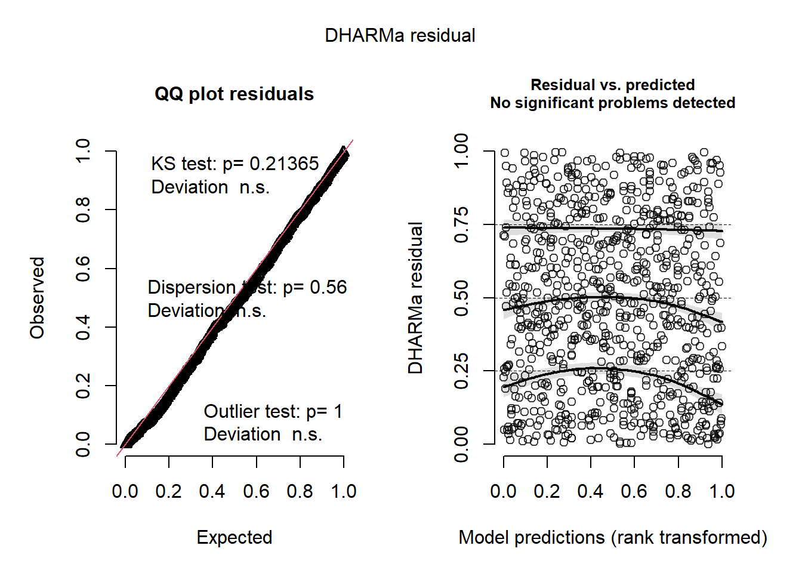
# Plot the scaled quantile residuals versus fitted values.
plotResiduals(simulationOutput, form = DeerEcervi$Sex)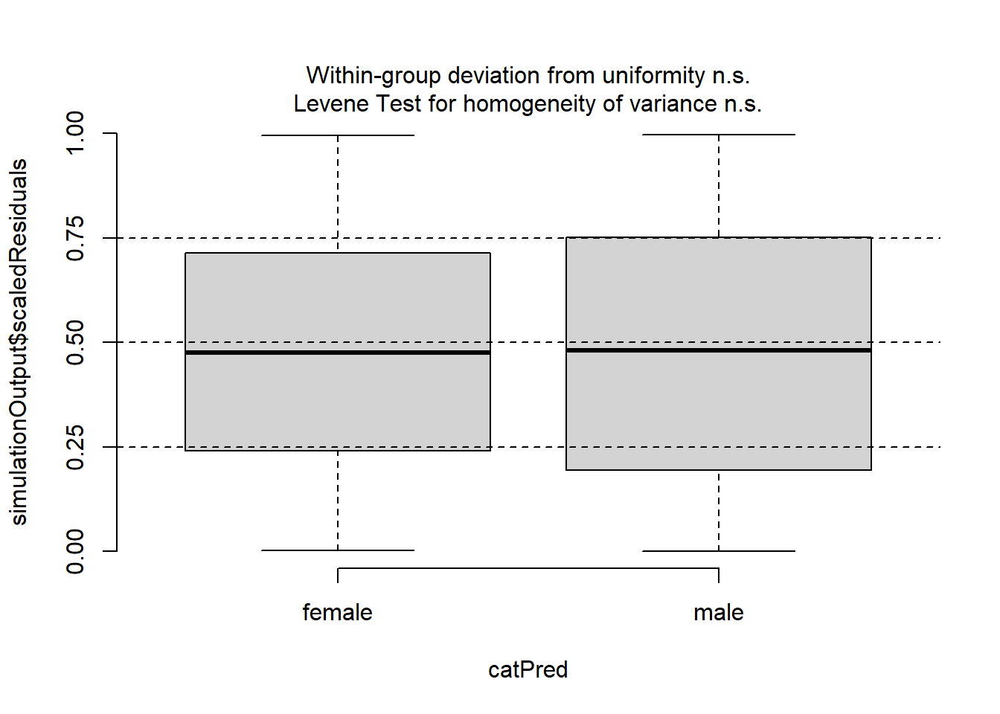
plotResiduals(simulationOutput, form = scale(DeerEcervi$Length) )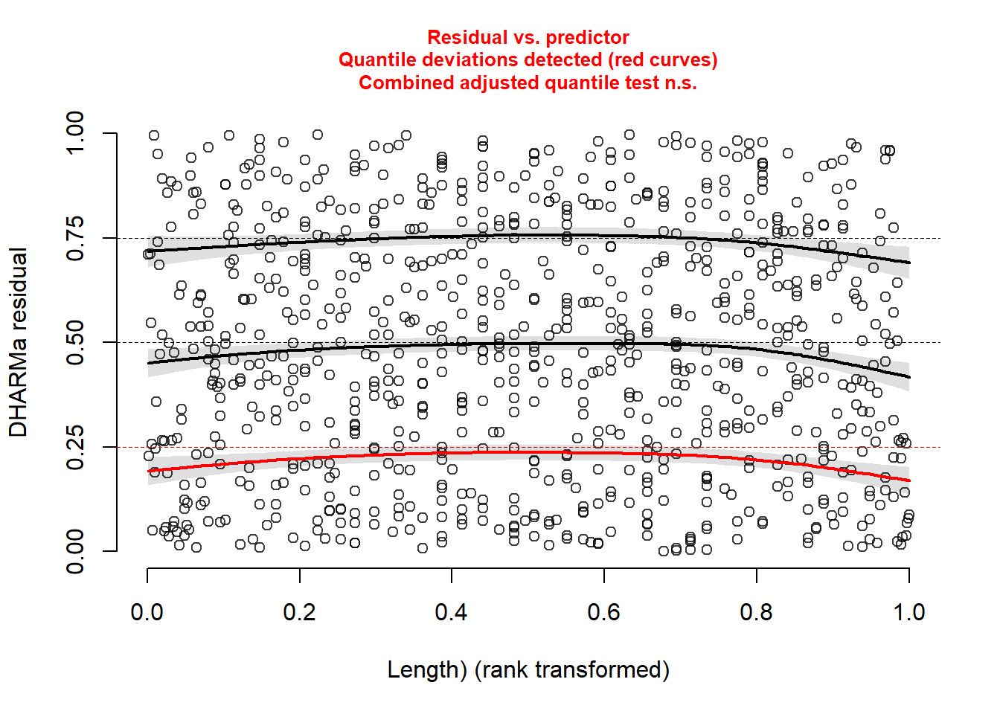
# Visualisierung
plot_model(glmm_1,
type = "pred", pred.type = "re",
terms = c("Length[all]", "Sex"),
show.data = TRUE) +
theme_classic()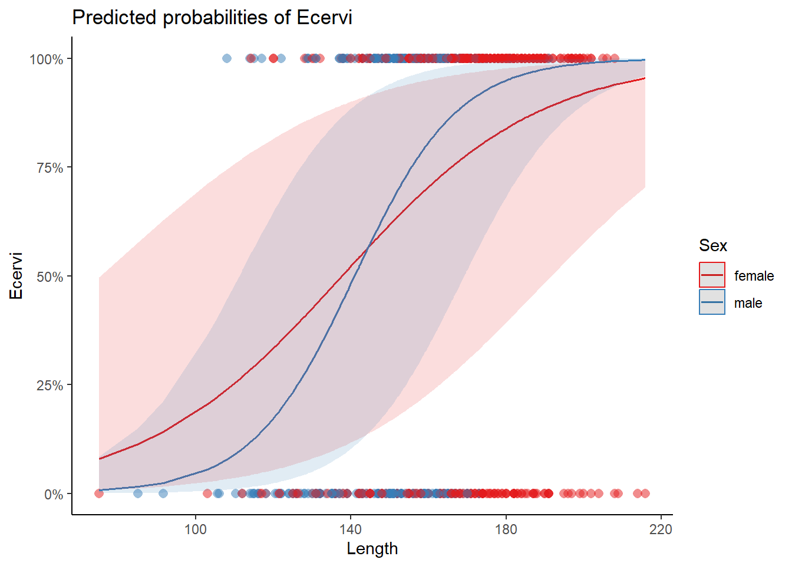